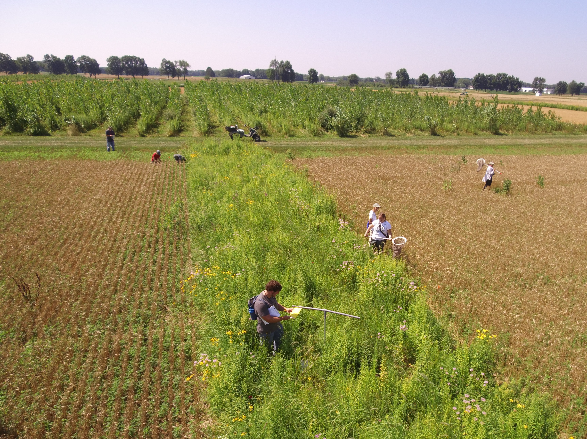

my_path <- file.path("path", "to", "my", "file")
my_path[1] "path/to/my/file"

This page contains the collected best practice tips of our team. More will be added over time and feel free to post an issue if you have a specific request for a section to add to this document. Please feel free to reach out to our team if you have any questions about this best practices manual and/or need help implementing some of this content.
Check the headings below or in the table of contents on the right of this page to see which tips and tricks we have included so far and we hope this page is a useful resource to you and your team!
When coding in R, either R scripts (.R files) or R markdowns (.Rmd files) are viable options but they have different advantages and disadvantages that we will cover below.
R scripts’ greatest strength is their flexibility. They allow you to format a file in whatever way is most intuitive to you. Additionally, R scripts can be cleaner for for loops insofar as they need not be concerned with staying within a given code chunk (as would be the case for a .Rmd). Developing a new workflow can be swiftly accomplished in an R script as some or all of the code in a script can be run by simply selecting the desired lines rather than manually running the desired chunks in a .Rmd file. Finally, R scripts can also be a better home for custom functions that can be sourced by another file (even a .Rmd!) for making repeated operations simpler to read.
The benefit of extreme flexibility in R scripts can sometimes be a disadvantage however. We’ve all seen (and written) R scripts that have few or no comments or where lines of code are densely packed without spacing or blank lines to help someone new to the code understand what is being done. R scripts can certainly be written in a way that is accessible to those without prior knowledge of what the script accomplishes but they do not enforce such structure. This can make it easy, especially when we’re feeling pressed for time, to exclude structure that helps our code remain reproducible and understandable.
R markdown files’ ability to “knit” as HTML or PDF documents makes them extremely useful in creating outward-facing reports. This is particularly the case when the specific code is less important to communicate than visualizations and/or analyses of the data but .Rmd files do facilitate echoing the code so that report readers can see how background operations were accomplished. The code chunk structure of these files can also nudge users towards including valuable comments (both between chunks and within them) though of course .Rmd files do not enforce such non-code content.
R markdowns can fail to knit due to issues even when the code within the chunks works as desired. Duplicate code chunk names or a failure to install LaTeX can be a frustrating hurdle to overcome between functioning code and a knit output file. When code must be re-run repeatedly (as is often the case when developing a new workflow) the stop-and-start nature of running each code chunk separately can also be a small irritation.
Taken together, both R scripts and R markdown files can empower users to write reproducible, transparent code. However, both file types have some key limitations that should be taken into consideration when choosing which to use as you set out to create a new code product.

This section contains our recommendations for handling file paths. When you code collaboratively (e.g., with GitHub), accounting for the difference between your folder structure and those of your colleagues becomes critical. Ideally your code should be completely agnostic about (1) the operating system of the computer it is running on (i.e., Windows vs. Mac) and (2) the folder structure of the computer. We can–fortunately–handle these two considerations relatively simply.
This may seem somewhat dry but it is worth mentioning that failing to use relative file paths is a significant hindrance to reproducibility (see Trisovic et al. 2022).
file.pathDepending on the operating system of the computer, the slashes between folder names are different (\ versus /). The file.path function automatically detects the computer operating system and inserts the correct slash. We recommend using this function and assigning your file path to an object.
my_path <- file.path("path", "to", "my", "file")
my_path[1] "path/to/my/file"Once you have that path object, you can use it everywhere you import or export information to/from the code (with another use of file.path to get the right type of slash!).
# Import
my_raw_data <- read.csv(file = file.path(my_path, "raw_data.csv"))
# Export
write.csv(x = data_object, file = file.path(my_path, "tidy_data.csv"))dir.createUsing file.path guarantees that your code will work regardless of the upstream folder structure but what about the folders that you need to export or import things to/from? For example, say your graphs.R script saves a couple of useful exploratory graphs to the “Plots” folder, how would you guarantee that everyone running graphs.R has a “Plots folder”? You can use the dir.create function to create the folder in the code (and include your path object from step 1!).
# Create needed folder
dir.create(path = file.path(my_path, "Plots"), showWarnings = FALSE)
# Then export to that folder
ggplot2::ggsave(filename = file.path(my_path, "Plots", "my_plot.png"))The showWarnings argument of dir.create simply warns you if the folder you’re creating already exists or not. There is no negative to “creating” a folder that already exists (nothing is overwritten!!) but the warning can be confusing so we can silence it ahead of time.
We strongly recommend following these guidelines so that your scripts work regardless of (1) the operating system, (2) folders “upstream” of the working directory, and (3) folders within the project. This will help your code by flexible and reproducible when others are attempting to re-run your scripts!
Also, for more information on how to read files in cloud storage locations such as Google Drive, Box, Dropbox, etc., please refer to our Other Tutorials.
When you first start working on a project with your group members, figuring out what to name your folders/files may not be at the top of your priority list. However, following a good naming convention will allow team members to quickly locate files and figure out what they contain. The organized naming structure will also allow new members of the group to be onboarded more easily!
Here is a summary of some naming tips that we recommend. These were taken from the Reproducibility Best Practices module in the LTER’s SSECR course. Please feel free to refer to the aforementioned link for more information.
Loading packages / libraries in R can be cumbersome when working collaboratively because there is no guarantee that you all have the same packages installed. While you could comment-out an install.packages() line for every package you need for a given script, we recommend using the R package librarian to greatly simplify this process!
librarian::shelf() accepts the names of all of the packages–either CRAN or GitHub–installs those that are missing in that particular R session and then attaches all of them. See below for an example:
To load packages typically you’d have something like the following in your script:
## Install packages (if needed)
# install.packages("tidyverse")
# install.packages("devtools")
# devtools::install_github("NCEAS/scicomptools")
# Load libraries
library(tidyverse); library(scicomptools)With librarian::shelf() however this becomes much cleaner! In addition to being fewer lines, using librarian also removes the possibility that someone running your code misses one of the packages that your script depends on and then the script breaks for them later on. librarian::shelf() automatically detects whether a package is installed, installs it if necessary, and then attaches the package.
In essence, librarian::shelf() wraps install.packages(), devtools::install_github(), and library() into a single, human-readable function.
# Install and load packages!
librarian::shelf(tidyverse, NCEAS/scicomptools)When using librarian::shelf(), package names do not need to be quoted and GitHub packages can be installed without the additional steps of installing the devtools package and using devtools::install_github() instead of install.packages().